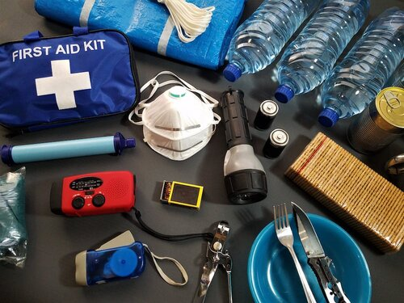

Despite not always being accurate, checking the weather forecast ,will spare you from unpleasant surprises.
You can view our things to do for the area you are camping in before leaving home. These suggestions are perfect for planning your days on and off the campsite before you arrive. You can also avoid mistakes as you plan beforehand
In case you are in capming in a tent, it is a good Idea to have a washing area.Preferably near your cooking area so you do not have to walk back and forth. Remember hand sanitizers are good, but they are not meant to replace water and soap.
Out of season sales are a great way to save money on camping kit and acessories. Be mindful of this opportunities, this may be a way to be prepared for any situtation without spendind lots of money.
It is okay having a favorite campsite you visit regularly, but you may find helpful exploring new places to get a feel on the different options available.
You must never go camping without a proper First-Aid kit. We all know there are many dangers in camping, wild animals encounters, fall and burn hazard. So be prepared to deal with those.
